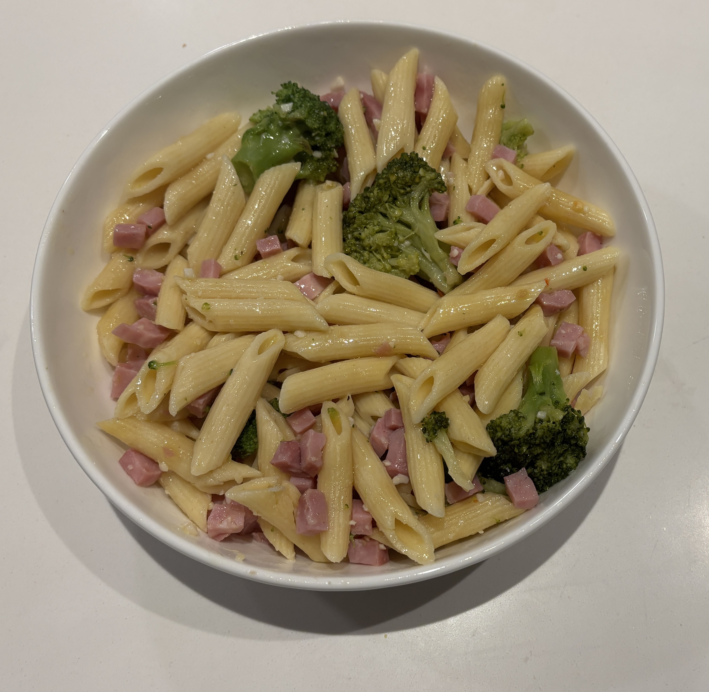

Home
Broccoli Pasta

Makes 4 servings
Ingredients
- 1 lb pasta
- 1/2 cup extra virgin olive oil
- 3 cloves of garlic minced
- Pre-cooked cubed ham
- 1/2 bunch broccoli flowerettes, cooked al dente
- Ground black pepper
- 2 tablespoons butter
- red pepper flakes
- 1/2 cup grated parmesan cheese
Steps
- In a large skillet heat the olive oil, garlic, and ham. Cook over medium heat for a few minutes
- Add the cooked broccoli and red and black pepper and saute for 5 minutes.
- Cook the pasta until al dente, drain well and return it to the hot pan in which it was cooked. Add the butter and toss lightly. Add the olive oil and broccoli mixture and toss again. Sprinkle with freshly grated cheese and toss once more.
- Taste and adjust seasonings. If the pasta is dry then add a little bit of the pasta water in which it was cooked.